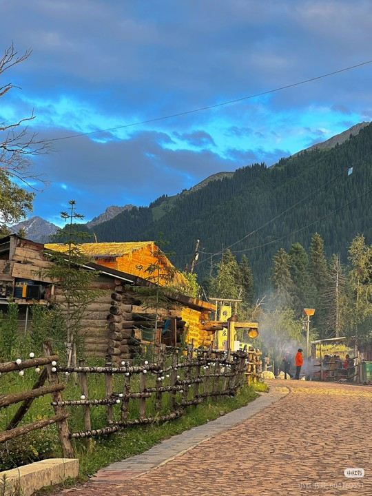
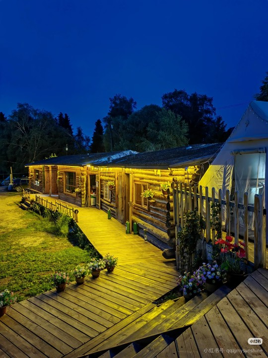

村落概览
琼库什台村，位于新疆伊犁哈萨克自治州特克斯县喀拉达拉镇，坐落在天山山脉深处，乌孙古道的北入口。这是一个以哈萨克族为主的牧业村，村内建筑多为木结构的“木刻楞”房屋，与周围的雪山、草原、森林融为一体，宛如童话世界。2010年，琼库什台村被列为中国历史文化名村，吸引着无数游客前来探寻这份原始与宁静。

壮美自然风光
这里拥有无与伦比的草原景观，夏季绿草如茵，野花遍地，牛羊成群。远处是皑皑雪山，近处是茂密的云杉林，构成一幅绝美的立体画卷。

独特历史人文
作为乌孙古道的起点，琼库什台承载着深厚的历史。村内保存完好的木质建筑是游牧民族智慧的结晶，也是研究草原文化的活化石。

乌孙古道起点
对于徒步爱好者而言，琼库什台是挑战世界级徒步路线——乌孙古道的起点。从这里出发，将踏上一段穿越雪山、湖泊和草原的史诗级旅程。